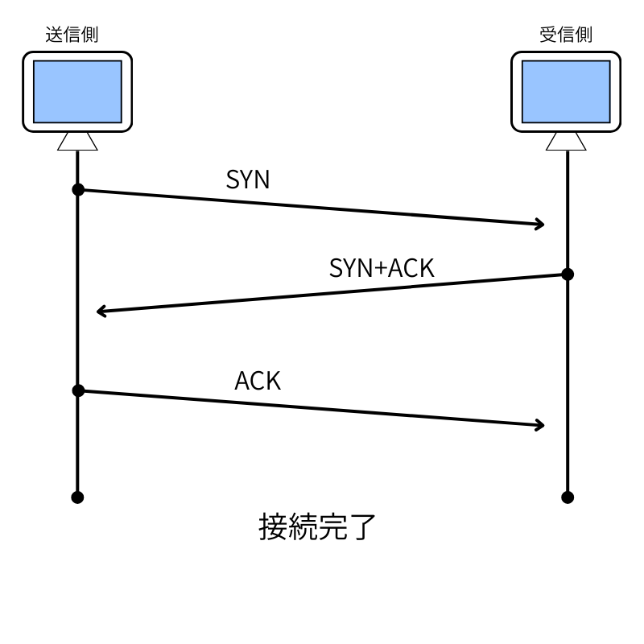
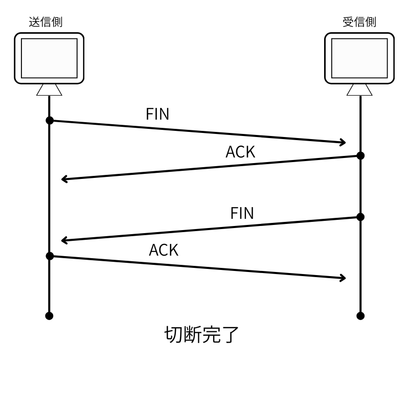

今回学ぶこと
✓OSI参照モデルやTCP/IPモデルで使用されるプロトコル
✓プロトコルの役割
✓OSI参照モデルやTCP/IPモデルで使用されるプロトコル
✓プロトコルの役割
プロトコルとは、データのやりとりをする上での決まり事のことを指す。
各層にプロトコルが定められている。
トランスポート層で信頼性の高い通信を提供する「TCP」と速度優先で通信をする「UDP」について学んでいこう
教科書P36～
IPは複数のネットワークをまたいだやりとりができる
IPはOSI参照モデルのネットワーク層に対応するプロトコルで、
IPv4アドレスの長さは32ビット、IPv6アドレスの長さは128ビットである。現在はIPv6のほうが主流である。
IPv4アドレスは「ネットワーク部」と「ホスト部」で構成される。
IPはコネクションレス型のプロトコルであり、通信の信頼性を保証しない。
教科書P38～、P90～
信頼性の高い通信を提供するとは、どんなことをしていると思いますか。TCPが接続を確立するとき、みなさんが友達と待ち合わせするときのようなやりとりに似ています。
TCPは下記の図のように3回のやりとりで接続を確立するため、スリーウェイハンドシェイクと呼ばれます。

また、接続を終了するときは、4回のやりとりで、それぞれが終了の合図を送る必要があります。

始める場合は緑の旗を押してください。
教科書P39～
動画を視聴するときや、オンラインゲームをしている最中に画面が固まったり、動きが遅くなった経験はありませんか。
オンラインゲームや動画に関しては、UDPという速度重視のプロトコルが使用されています。
速度重視のため、TCPとは違い確認作業を行いません。信頼性には欠けますが、その分リアルタイム性に優れています。